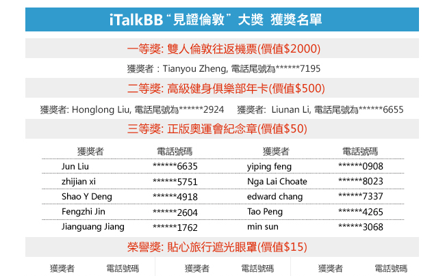

領獎啦！ iTalk回饋用戶大獎揭曉
（弗吉尼亞維也納9月30日）
2012年8月倫敦奧運會期間，iTalk為感謝廣大用戶的多載相伴、一路兼程，特舉辦了"見證倫敦"回饋用戶大抽獎活動，送出雙人倫敦往返機票、健身年卡等超多誘人大禮。
因為參與簡單，獎品豐厚，中獎率高，活動開始數天，便吸引了超過一萬多名用戶的熱情參與。而各個精彩大獎究竟花落誰家，謎底終於在上周三由iTalk主辦的金牌教練王海濱/奧運冠軍雷聲-iTalk用戶見面會上隆重揭曉。
作為中國男子花劍隊的特約贊助商，iTalkBB將新科男子花劍奧運冠軍雷聲，以及他的教練-- 昔日花劍三劍客之一的王海濱請到美國，與iTalk的用戶見面交流。在氣氛爆棚的見面會上，在全場觀眾的翹首企盼下，儒雅雋秀的金牌少帥王海濱教練和一位年僅14歲的iTalk幸運用戶代表Richard一同抽出了513個獲獎用戶，分別獲得雙人倫敦往返機票、健身俱樂部年卡等獎品，全部獲獎名單如下：
全部獲獎名單
工作人員在抽獎結束的第一時間內打通了中了一、二等獎的幸運用戶的電話，電話中便感受到他們得知中獎後難以抑制的欣喜。獲得大獎的鄭先生更是無比激動地說道，"倫敦一直是他和家人想去而未去的地方，感謝iTalk為他圓夢。"
iTalkBB作為百萬華人首選的家庭電信服務，一直以為海外華人提供更美好生活作為企業創辦的宗旨和目標，是大家的信賴，支持着我們不斷前行，完善產品，提升服務，向更高的目標邁進。本次見面會活動是本屆奧運盛會結束後，中國奧運冠軍第一次在北美的見面會活動，得到了各方的高度重視和用戶們的??熱烈歡迎。主辦方表示，今後會更加不遺餘力將客戶關懷做得更加系統、完善，讓每一位iTalk的用戶除了便捷經濟的電信服務之外，還能得到各種豐富多彩的附加服務體驗。
更多詳情，請登錄www.iTalkBB.com 或撥打24小時服務熱線1-877-482-5522查詢。
關於iTalkBB：
iTalkBB新電信是享譽全美的優秀通訊品牌，是國際電訊行業的領導和先驅。其以頂級全球網絡和前沿技術為依託，以最具競爭力的價格為客戶提供高質、清晰的本地、國內及國際長途電話服務，以及高清中文電視直播、回播與點播服務。其電話業務能完全取代傳統家庭電話，並享受多重免費提供的附加功能如來電等待、三方通 話、來電顯示、呼叫轉移等。另有獨一無二的功能——中國大陸、台灣、香港、南韓當地號碼，當地親友只要撥打此號碼，就能接通到在美國的親友，而無需支付國際 長途費用 。iTalkBB的高清中文電視服務，自問世以來便受到了廣泛的好評和歡迎。超過五十個熱門頻道支持實時直播與48小時回看，海量最新電影電視劇綜藝節目免 費無限點播，讓用戶以最低價格盡享華語娛樂。iTalkBB新電信將不斷努力，與您共同成就更美好的生活。iTalkBB設有24小時中英文的客戶服務熱線: 1-877-482- 5522和官方網站www.iTalkBB.com，一年365天提供不間斷的服務與更多信息的查詢。